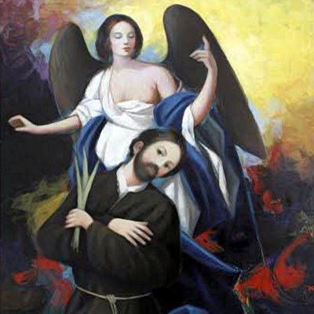

Isusovački blaženici
Svećenik · Misionar · Mučenik
Bl. Ivan Antun Solinas
1643. – 1683.
Misionar sa Sardinije pomagao je siromašnima i bolesnicima u Južnoj Americi. Ustrajao je u naviještanju Evanđelja i pomirenju sve do mučeničke smrti.
Tekst je preveden i prilagođen uz pomoć umjetne inteligencije.

Izvor slike
- Spomendan
- 27. listopada
- Zaštitništvo
- Nije navedeno u izvoru
- Životni vijek
- 1643. – 1683.
- Djelovanje
- Misije i evangelizacija · Siromašni i isključeni · Bolesnici i umirući · Mučeništvo · Dijalog i pomirenje
- Razdoblje
- 17. stoljeće
- Datum rođenja
- 15. veljače 1643.
- Ulazak u Družbu Isusovu
- 12. lipnja 1663.
- Datum smrti
- 27. listopada 1683.
- Beatifikacija
- 2. srpnja 2022.
U kalendaru zbirke koristi se dan smrti. Taj datum nije zasebna potvrda liturgijskoga spomendana.
Životopis
Ivan Antun Solinas rođen je 15. veljače 1643. u Olieni na Sardiniji. U Družbu Isusovu stupio je 12. lipnja 1663. u Cagliariju. Nakon novicijata položio je prve zavjete 1665., a 1672. poglavarima iznio želju da bude poslan među starosjedilačke narode Amerike. Put ga je preko Barcelone i Madrida doveo u Sevillu, gdje je dovršio teologiju i 27. svibnja 1673. primio svećenički red.
Sljedeće je godine s drugim sardinskim isusovcima krenuo u tadašnju Paragvajsku provinciju. Nakon dolaska u Južnu Ameriku i treće probacije u Santa Feu služio je u redukcijama među Guaranijima, osobito u Santa Ani i Itapúi. Redukcije su bile misijske zajednice u kojima su evangelizacija i svakodnevna skrb za stanovništvo bile tijesno povezane. Solinas je pomagao siromašnima hranom i odjećom te njegovao bolesne. Suvremenici ga pamte kao blaga, nenametljiva i strpljiva čovjeka, spremna prihvatiti teškoće svojega poslanja.
Posebno je želio djelovati u Chacu, prostranu području između današnje Bolivije i sjeverozapadne Argentine. Ondje se misija odvijala usred sukoba različitih skupina. Godine 1683. pridružio se pothvatu dijecezanskoga svećenika Pedra Ortiza de Záratea, dugogodišnjega župnika u Jujuyu. Zárate je prije svećeništva bio oženjen i obnašao građanske dužnosti; nakon ženine smrti i ređenja posvetio se župljanima, siromašnima i bolesnima. Njihovo zajedničko putovanje započelo je u svibnju s više od sedamdeset pratitelja i vodilo u dolinu Zenta.
U listopadu su misionari i pratitelji bili izloženi prijetnjama. Nakon mise 27. listopada 1683. došlo je do napada u kojem su ubijeni Solinas, Zárate i osamnaest laika, među njima i domaći kršćani. Njihov apostolat nastojao je povezati navještaj vjere, pomoć ljudima i pomirenje zavađenih zajednica. Dvojica svećenika zajednički su proglašena blaženima 2. srpnja 2022. Njihovo se mučeništvo odnosi na isti događaj, dok pojedinačne životne putove treba razlikovati: Solinas je bio isusovac, a Zárate dijecezanski svećenik.
Tekst je preveden i prilagođen uz pomoć umjetne inteligencije.
Pročitaj više na izvornoj stranici ↗